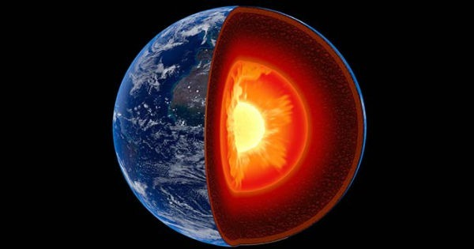

O Núcleo Terrestre
O núcleo corresponde a um terço de toda a massa terrestre. É principalmente composto por Ferro e Níquel. Por isso também é chamado de NiFe.
É dividido em dois núcleos o externo e interno, o tamanho do externo vai de 2900 a 5100Km, é principalmente fluido e suas temperaturas variam de 3000°C a 3800°C. Enquanto o interno possui 5100 a 6370Km, sendo sólido, chegando a temperaturas de 6000°C, a mesma que o do sol
Segundo os cientistas, a temperatura do núcleo terrestre é tão alta que o ferro pode ser levado ao estado líquido.
O Núcleo da Terra. Fonte: Toda Matéria (Camadas da Terra - Toda Matéria
No total a Terra possui 3 camadas, cada uma com sua função, sem o equilíbrio entre as camadas terrestres, talvez o planeta se desintegrasse com a densidade e pressão de cada região, o planeta Terra é diversificado em vários fatores, mas as camadas estão ali para manter todo o conteúdo do planeta em conjunto, estão ali para manter o equilíbrio.
Para mais informações:
Camadas da Terra - Mundo Educação: Clique aqui
Camadas da Terra - Toda Matéria: Clique aqui
Camadas da Terra - Brasil Escola Clique aqui